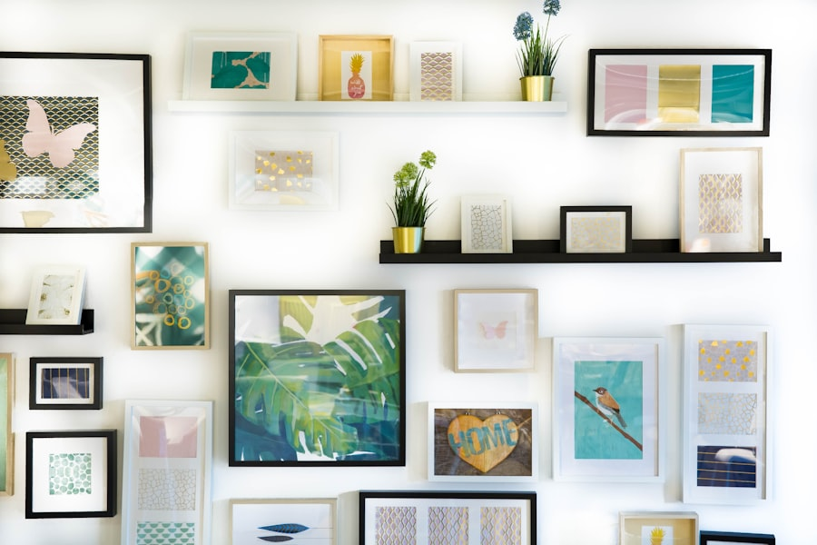

Living Room Architecture
10 Modern Living Room Interior Design Ideas: Merging Warm Minimalism with Ahmedabad's Light
Author: Mr. Nikunj Patel
•
•
5 Min Read
The contemporary living room in Ahmedabad is experiencing a renaissance. Gone are the days of rigid, overly gilded classical drawing rooms that felt uncomfortable for everyday family life. Today's luxury homeowner seeks quiet serenity: an interior that honors our heritage of stone craftsmanship and natural ventilation while embracing international minimalist precision.
Stark clinical whites often appear harsh under Western India's bright sunlight. Instead, build your foundation upon warm alabaster, soft oatmeal, oat taupe, and textured lime washes. These tones soften the visual intensity of daylight and create a natural canvas that reflects a welcoming glow into adjacent dining and foyer areas.
Architectural shading is paramount. Deep window reveals, automated sheer linen draperies, and motorized louvers allow gentle, diffused northern and eastern light to wash over living surfaces while blocking intense southern heat spikes during summer afternoons.
"Architecture is the learned game, correct and magnificent, of forms assembled in the light. The living room is where light becomes emotion."— Ar. Nikunj Patel, A & A Design Studio
Rather than high-gloss polished mirrors that show every footprint and reflect harsh glare, opt for honed or brushed Italian Silver Travertine, Grey Flurry marble, or Kota stone. Large slabs (up to 8 x 4 feet) with hairline micro-grouted joints elongate the room, giving the impression of an expansive stone pavilion.
Modern living rooms frequently suffer from echo and hard surface reverberation due to extensive glass and stone. Introducing custom fluted oak or walnut wall panels behind media units breaks up sound waves while introducing rich, linear texture that catches indirect light.
Avoid massive bulky high-back couches that block horizontal sightlines. Low-slung modular sectionals upholstered in durable textured bouclé or Belgian linen allow sightlines to continue uninterrupted across the room out to private balconies or garden courtyards.
Carefully positioned sliding glass apertures create passive pressure differentials, sweeping cooler evening breezes across the floor and expelling rising warm air through high-level louvered transoms.
A grid of bright spotlights in the ceiling creates fatigue. Instead, utilize concealed architectural coves that cast a warm 2700K indirect wash onto ceiling surfaces, complemented by low-level floor lamps and targeted picture lights for art pieces.
An internal glass atrium with Ficus, Areca palms, or smooth river stones introduces nature directly into the interior. The soothing sight of greenery against natural stone connects modern apartments with timeless Gujarati courtyard traditions.
Modern home theater systems and gaming consoles should be completely invisible when not in use. We engineer ventilated acoustic millwork with infrared repeater sensors, hidden subwoofers, and flush wall integration.
Curate one or two commanding original artwork pieces rather than a chaotic gallery wall. Pair them with hand-loomed raw silk cushion covers and textured wool rugs to ground the conversation area in authentic warmth.

Navigating the delicate equilibrium between calming neutral tones, textured lime plasters, and timeless bronze accents.
Read Article
Bioclimatic spatial design, tactile raw finishes, concealed architectural lighting, and seamless indoor-outdoor transitions.
Read Article